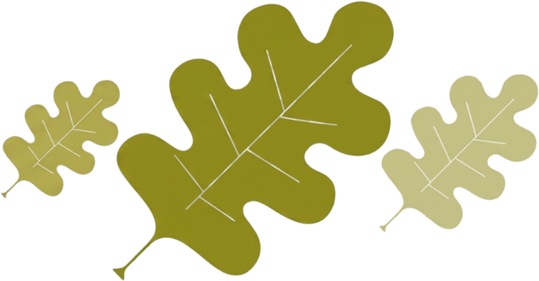
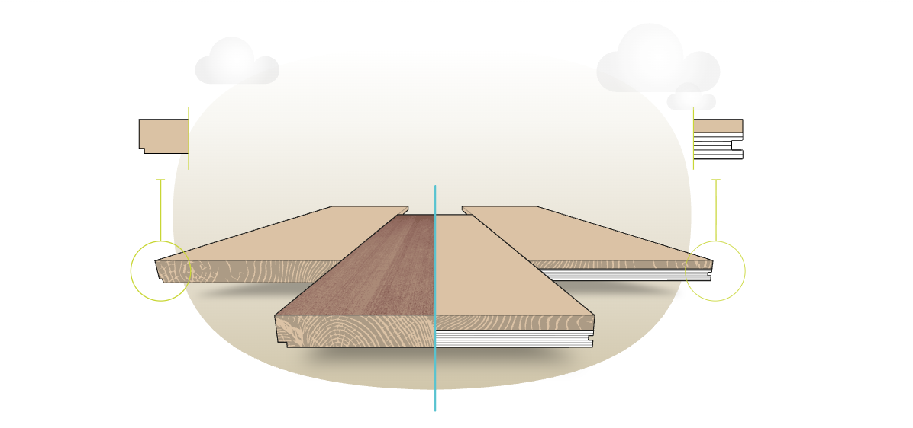
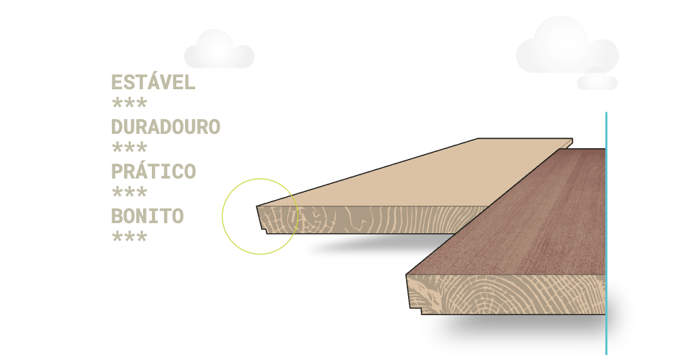
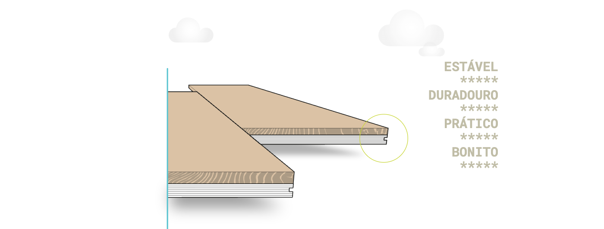

A Parket nasce da convicção de que a madeira é a linguagem mais autêntica da arquitetura brasileira. Cada projeto que realizamos é uma tradução precisa entre o desejo do arquiteto e a natureza do material.
Trabalhamos com madeiras de manejo sustentável, processos industriais de altíssima precisão e uma equipe técnica que entende que cada milímetro importa. Nosso compromisso é entregar superfícies que envelhecem com beleza — e que resistem ao tempo com a mesma elegância do primeiro dia.
Vivemos em uma era de velocidade e excesso de informação. Por isso, reconhecer a verdadeira qualidade se tornou cada vez mais raro. A excelência está nos detalhes, na tradição e no cuidado em criar algo autêntico como um piso de madeira nobre feito para durar.
Valorizar conhecimento, artesanato e qualidade é preservar a beleza e evitar um mundo cada vez mais comum. Esperamos que este guia tenha ajudado a responder a principal pergunta: por que escolher Parket?

Madeira multicamadas.
O que há por trás dela?
Estrutura tecnológica
e mecânica de ponta.

Se você acredita que aparência e essência devem caminhar juntas, está no lugar certo. Os pisos Parket unem beleza, sofisticação e tecnologia em cada detalhe. Assim como em um carro esportivo de alta performance, onde o design impressiona, mas é a engenharia que garante segurança, estabilidade e desempenho, um piso de excelência também vai muito além da superfície. Por trás da estética refinada dos pisos Parket existe uma tecnologia estrutural desenvolvida para proporcionar maior estabilidade, durabilidade e conforto. É essa combinação entre aparência impecável e qualidade construtiva que faz toda a diferença.
Você chamaria
isso
simplesmente
de piso de madeira?



Existem tantos tipos diferentes de pisos de madeira no mercado hoje em dia – diferentes dimensões, tipos de madeira e acabamentos – que pode ser muito confuso. É fundamental não se guiar apenas por critérios estéticos. Os pisos de madeira são naturalmente procurados por sua beleza e pela sensação de bem-estar que transmitem. Mas nunca se esqueça de que são um componente técnico importante da sua casa e que fatores como estabilidade dimensional, espessura total disponível e resistência térmica desempenham um papel crucial. É por isso que você deve fazer uma distinção importante entre o parquet tradicional e o parquet de madeira engenheirada.

Cada tábua tradicional nada mais é do que uma tira de madeira maciça, sem qualquer tratamento que possa aumentar sua estabilidade. O que é uma vantagem em um móvel antigo, por exemplo, é uma limitação tecnológica para pisos de madeira, onde a madeira é sinônimo de tensão e movimento. Essa falta de tratamento torna o parquet tradicional especialmente sensível a mudanças de umidade e, portanto, sujeito a empenamento. E, à medida que a espessura da tábua aumenta, essa reação tende a se acentuar. O risco é o aparecimento de rachaduras ou fendas antiestéticas e até mesmo, em casos mais extremos, o desprendimento. É por isso que não é recomendado o uso com sistemas de aquecimento de piso e em ambientes sensíveis.

O piso engenheirado é feito 100% de madeira pura, com uma estrutura desenvolvida para unir beleza e desempenho. Sua camada superior valoriza a aparência natural da madeira, enquanto a base proporciona maior estabilidade e resistência às variações de umidade. Essa tecnologia permite o uso de tábuas maiores, oferecendo mais sofisticação estética e melhor desempenho técnico em diferentes aplicações.
A madeira é um elemento vivo e, como tal, sensível, reagindo constantemente ao ambiente circundante. É especialmente sensível às variações de umidade e, até certo ponto, adapta-se, ajustando-se lenta e imperceptivelmente por meio de uma série de movimentos que, a longo prazo, alteram suas dimensões. É fácil perceber como essa resposta natural pode ser um problema quando utilizada em pisos, que estão regularmente sujeitos a grandes variações de temperatura em extensas superfícies, além de frequentemente estarem úmidos. Felizmente, pesquisas trouxeram soluções para esse problema. Com a evolução dos pisos engenheirados modernos, madeira e segurança finalmente podem coexistir em perfeita harmonia.
A cor da madeira vem dos extrativos que ela contém. A exposição ao ar e à luz modifica esses extrativos, transformando a cor original do parquete ao longo do tempo. Espécies tropicais, por conterem mais extrativos, evoluem para marrons mais escuros.
Iroko e Parket apresentam as mudanças mais intensas — tábuas originalmente semelhantes podem assumir tonalidades distintas. O Teak varia bastante no início mas se uniformiza com o tempo; o Wengé mantém boa estabilidade de cor.
Com a luz, a madeira tende ao amarelo, mesmo em acabamentos pigmentados. Exposição solar direta e intensa pode causar descoloração — recomenda-se o uso de cortinas ou filmes UV nos vidros.
Tábuas cortadas em seção radial do tronco apresentam grão reto e reflexos iridescentes — o chamado grão prateado, historicamente valorizado como indicador de qualidade e prestígio.
A madeira é um material vivo, influenciado por luz, temperatura, umidade e uso. Além da estética, o grão prateado indica melhor desempenho técnico: estabilidade dimensional e impermeabilidade.
A madeira é um material natural e variegado: cada peça é única. Amostras compostas por poucas tábuas fornecem apenas uma ideia geral do parquete, sem representar fielmente todas as nuances e veios.
A cor muda com o tempo por exposição à luz e ao ar — um piso recém-instalado pode ter aparência diferente de uma amostra já exposta.
A madeira dilata e retrai conforme umidade e temperatura. O ideal é manter o ar entre 15°C e 30°C e a umidade relativa entre 45% e 65% — faixa também ideal para as pessoas — durante e após a instalação.
No inverno pode ser necessário umidificar o ar. Em pisos com aquecimento, a superfície nunca deve ultrapassar 27°C; evite cobri-la com tapetes grossos que retenham calor.
Produtos Parket com suporte de compensado de bétula (ver Especificações Técnicas) toleram condições mais severas — umidade a partir de 30% e superfície até 29°C — mantendo a integridade.